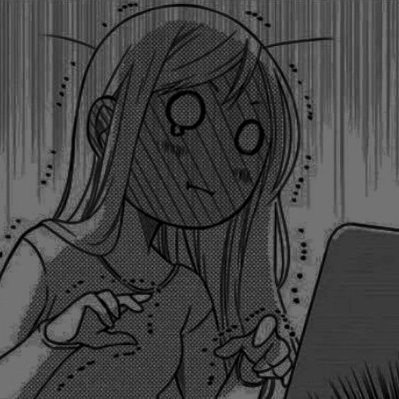

manga i read
Featured Manga Series
-
A Sign of Affection
"A Sign of Affection" is a heartwarming manga that follows the story of Yuki, a college student who is hearing impaired, and Itsuomi, a fellow student who takes an interest in her. Together, they navigate the challenges of communication and develop a deep bond.

-
Spy x Family
"Spy x Family" is an action-packed manga with a twist. It revolves around a spy named Twilight, who is tasked with a mission to infiltrate an elite school. To maintain his cover, he adopts a young girl named Anya and pretends to be a father. Little does he know that Anya is a telepath, and their lives become intertwined with a skilled assassin and a secret agent.
-
Yamada-kun to Lv999 no Koi wo Suru
"Yamada-kun to Lv999 no Koi wo Suru" The story follows the daily life of college student Akane Kinoshita, who after getting dumped by her ex-boyfriend, gets closer with the members of the guild in the game she's playing, especially the emotionless, high school student Akito Yamada.
